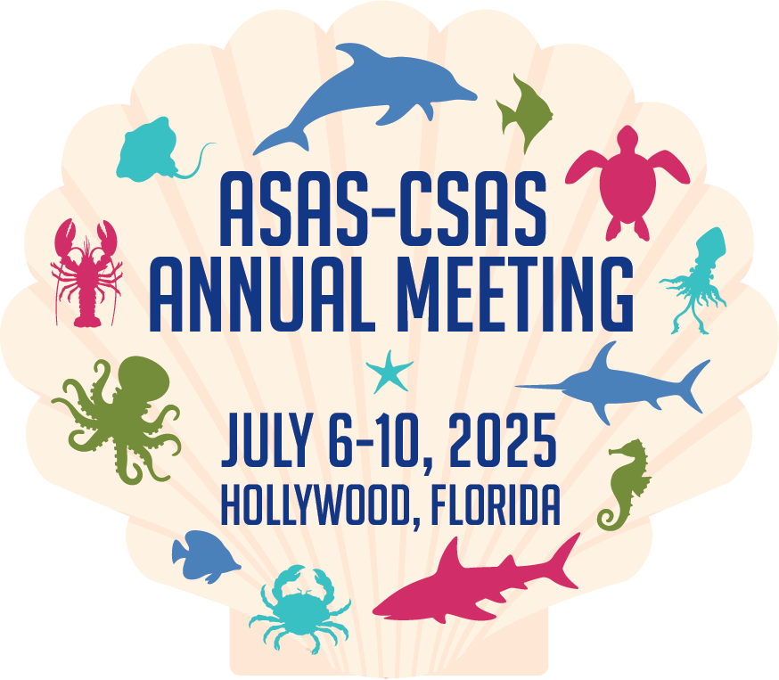

Ye Bi 毕晔
Deep Learning ⟠Computer Vision ⟠Genetics ⟠Data Science

I am a Postdoctoral Research Associate from Dr. Juan Pedro Steibel’s group in the Department of Animal Science at Iowa State University.
I earned my Ph.D. under the mentorship of Dr. Gota Morota in the School of Animal Science at Virginia Polytechnic Institute and State University.
My research interests focus on incorporating artificial intelligence, computer vision, statistics, phenomics, and genetics to study animal and plant sciences.
Happy New Year! 🌷🌸🌿🌞🐦🌼🌻🐝🦋.
Please note that my VT email address, yebi@vt.edu, will expire soon. For future correspondence, please use yebi@iastate.edu 📩
My Google Scholar profile will also be updated accordingly and is available here
Research Topics
        ✓ Precision Livestock Farming ğŸ·ğŸ½ğŸ„ğŸ–
        ✓ Quantitative Genetics for animals 🐄🐂
        ✓ Quantitative Genetics for plants 🌿🌾
Recent News
(See All)
| Aug 12, 2025 |
[New Paper Accepted] Ye Bi, Yijian Huang, Jianhua Xuan, and Gota Morota. Industry-scale prediction of video-derived pig body weight using efficient convolutional neural networks and vision transformers. Biosystems Engineering 257 (2025): 104243. doi:10.1016/j.biosystemseng.2025.104243

|
|---|---|
| Jul 6, 2025 | [Oral presentation] Glad to give one oral presentation in ASAS2025!! Automated segmentation and tracking of group housed pigs using zero-shot vision-language tools. 2025 ASAS-CSAS Annual Meeting. Hollywood, Florida. July 6-10. 2025.  |
| Jun 6, 2025 |
[New Preprint] Ye Bi, Yijian Huang, Haipeng Yu, and Gota Morota. "Impact of trait measurement error on quantitative genetic analysis of computer vision derived traits." bioRxiv (2025): 2025-06. doi:10.1101/2025.06.02.657462.
|
| Mar 21, 2025 |
[New Paper Accepted] Liao, Mingsi, Gota Morota, Ye Bi, and Rebecca R. Cockrum. "PredictingDairy Calf Body Weight from Depth Images Using Deep Learning (YOLOv8) and Threshold Segmentation with Cross-Validation and Longitudinal Analysis." Animals 15, no. 6 (2025): 868. doi:10.3390/ani15060868

|
Selected Publications
Check out Google Scholar for a full list of my publications.
-
DissertationDigital Phenotyping and Genomic Prediction Using Machine and Deep Learning in Animals and Plants2024